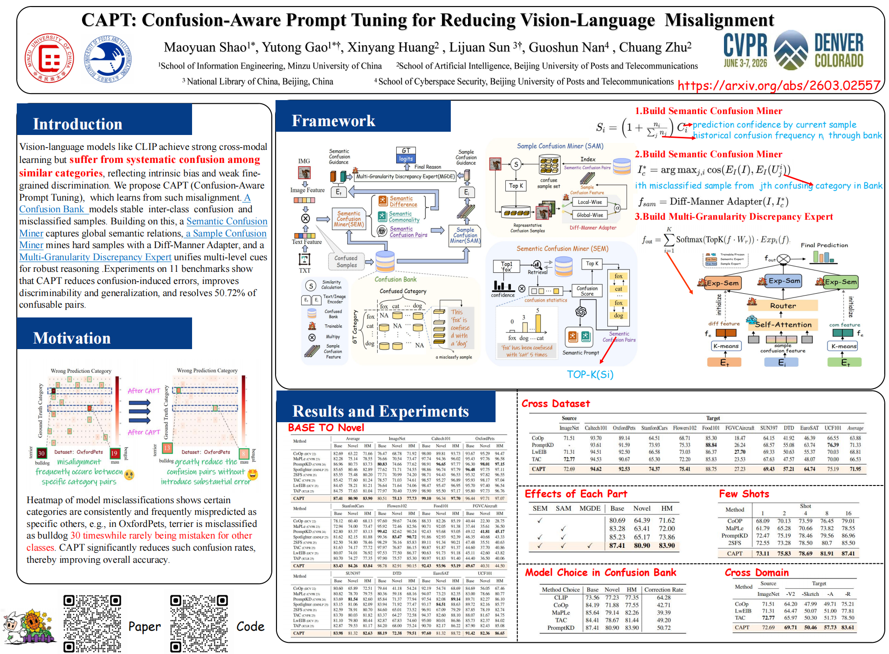
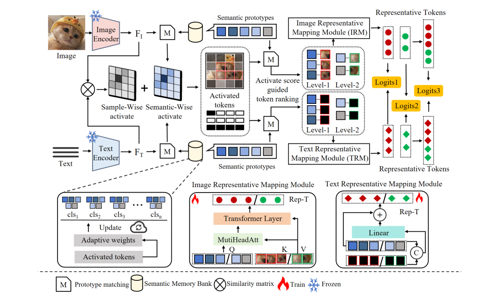
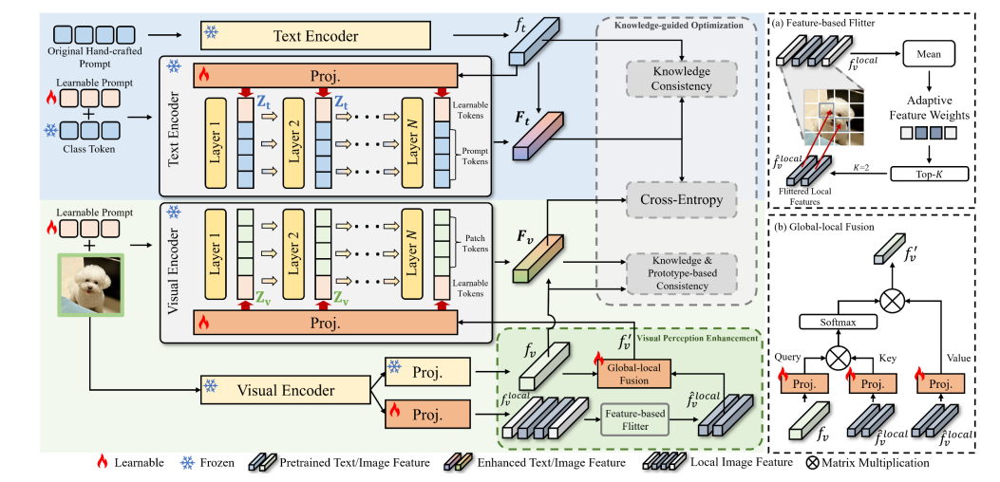

Hi! I am currently a junior undergraduate student at Minzu University of China. My academic interests include artificial intelligence, data science, and interdisciplinary research. I am interested in building reliable computational methods and applying them to real-world research problems.
I am actively looking for opportunities to collaborate on research projects. Please feel free to contact me by email if you are interested in my work.
News
- 2026.02: 🎉🎉 My first-authored paper, CAPT: Confusion-Aware Prompt Tuning for Reducing Vision-Language Misalignment, has been accepted by the main conference of CVPR 2026, with the paper available on arXiv and the code available on GitHub.
- 2025.08: 🎉🎉 My first co-first-authored paper, Spotlighter: Revisiting Prompt Tuning from a Representative Mining View, has been accepted by EMNLP 2025. The paper is available on arXiv, and the code is available on GitHub.
Publications

CVPR26CAPT: Confusion-Aware Prompt Tuning for Reducing Vision-Language Misalignment
Maoyuan Shao, Yutong Gao, Xinyang Huang, Lijuan Sun, Guoshun Nan, Chuang Zhu
Computer Vision and Pattern Recognition Conference (CVPR), 2026
Current vision-language models such as CLIP suffer from persistent confusion patterns among similar categories and cross-modal semantic misalignment. To address this, we construct a Confusion Bank from misclassified samples to capture stable confusion structures, and further model multi-granularity confusion features from both semantic (SEM) and sample (SAM) perspectives. These features are then unified and integrated through a Multi-Granularity Discrepancy Expert (MGDE) for confusion-aware reasoning. As a result, the method effectively resolves most confusing category pairs and significantly improves fine-grained discrimination and generalization performance across 11 benchmark datasets.

EMNLP25Spotlighter: Revisiting Prompt Tuning from a Representative Mining View
Yutong Gao*, Maoyuan Shao*(Equally Contribute), Xinyang Huang, Chuang Zhu, Lijuan Sun, Yu Weng, Xuan Liu, Guoshun Nan
Conference on Empirical Methods in Natural Language Processing (EMNLP), 2025
In prompt tuning for vision-language models such as CLIP, redundant features often introduce noise and create computational bottlenecks. To address this, we propose a lightweight token selection framework, Spotlighter, which preserves high-activation tokens from both sample-level and semantic-level perspectives. It further incorporates a semantic memory bank and a two-stage ranking mechanism to dynamically fuse core features and compensate for missing semantics. As a result, the method introduces only 21 additional parameters, achieves up to a 11.19% improvement in harmonic mean (HM) accuracy, and increases average inference speed by 0.8K FPS.

NeurocomputingMoDe: Multi-modal Discriminative Priors for Prompt Tuning
Xinyang Huang, Chuang Zhu, Maoyuan Shao, Zekuan Yu
Neurocomputing
CLIP suffers from limited discriminative capability in cross-category generalization due to its over-reliance on global representations while overlooking fine-grained local details. To address this, we propose MoDe, a multimodal prior-driven framework that enhances feature representation and generalization through Multimodal Knowledge Injection (MKI), Vision Prior Enhancement (VPE) for global-local feature fusion, and Knowledge-Guided Optimization (KGO). Extensive experiments on 11 datasets demonstrate that MoDe achieves 85.45% accuracy on Base-to-New tasks, significantly improving discriminability and cross-domain generalization.
Educations
- 2023.09-present: Undergraduate student in Data Science and Big Data Technology, School of Information Engineering, Minzu University of China.
Internships
- 2026: National Laboratory of Pattern Recognition, Institute of Automation, Chinese Academy of Sciences.
- 2025: Science Data Center for Condensed Matter Physics, Institute of Physics, Chinese Academy of Sciences.
- 2024: School of Artificial Intelligence, Beijing University of Posts and Telecommunications.
Competitions
- The 27th China Robotics and Artificial Intelligence Competition, National First Prize.
- The 8th China University Intelligent Robot Creative Competition, National Second Prize.
- "Youth Innovation Beijing" 2025 "Challenge Cup" Capital College Students' Extracurricular Academic Science and Technology Works Competition, Beijing First Prize.